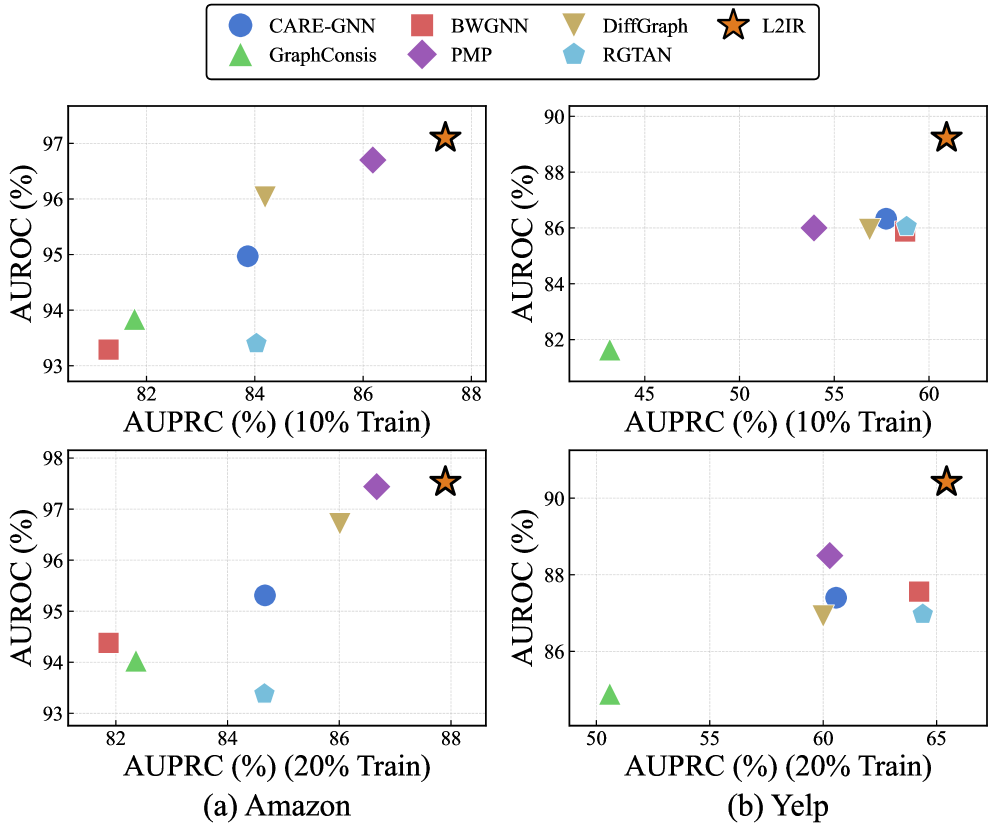
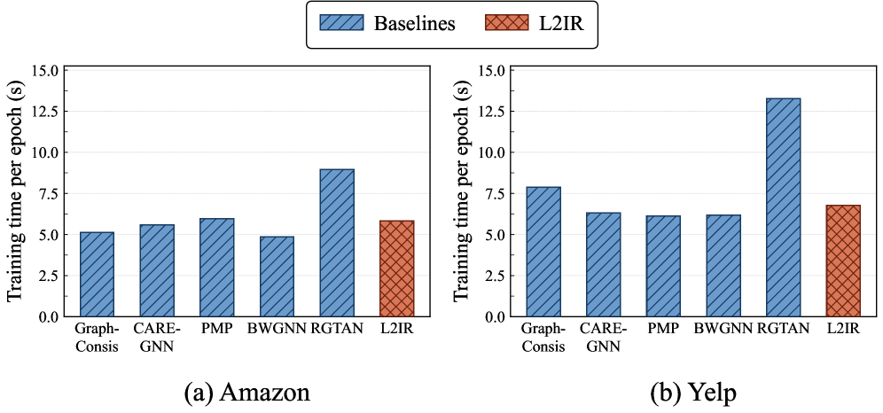
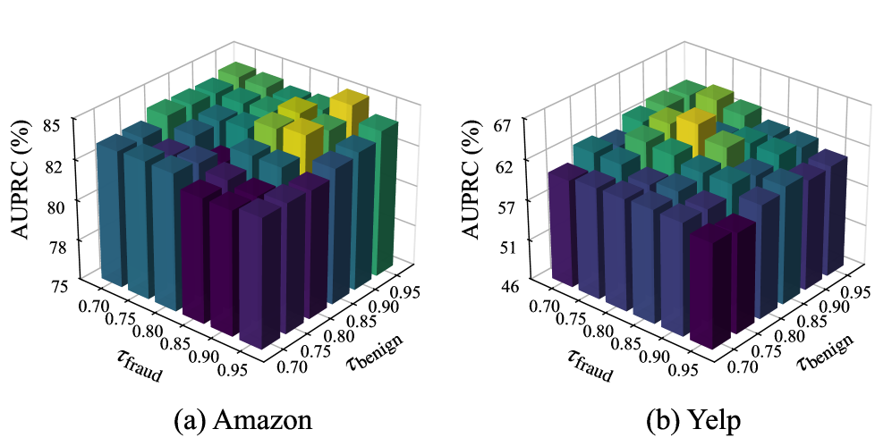

L2IR reveals latent intent in graph fraud detection by leveraging LLMs to reason about the true purpose behind connections, achieving up to 8.27% AUPRC improvement under camouflage and limited supervision.
本文提出L2IR框架，利用大语言模型推断用户行为与连接背后的潜在意图，从而区分支持性连接与误导性连接，显著提升图欺诈检测性能。在真实数据集上，L2IR将AUPRC最高提升8.27%，并能作为即插即用模块增强各类GNN检测器。
Deep Note — l2ir
Key Takeaways - L2IR uses LLMs to infer latent intent behind user behaviors and connections, distinguishing supportive links from misleading ones in graph fraud detection. - The framework improves AUPRC by up to 8.27% over strong baselines on real-world datasets with pervasive camouflage. - Adaptive self-training augments limited supervision, enhancing robustness under label scarcity. - L2IR can serve as a plug-in enhancement for various GNN-based detectors.
0) Metadata
- Title: L2IR: Revealing Latent Intent in Graph Fraud Detection
- Alias: l2ir
- Authors: Jinsheng Guo, Zhenhao Weng, Yibo Liu, Yan Qiao, Meng Li
- arXiv ID: 2605.26040
- Published:
- Links:
- Abs: https://arxiv.org/abs/2605.26040
- HTML: https://arxiv.org/html/2605.26040v1
- PDF: https://arxiv.org/pdf/2605.26040
- Tags: graph-fraud-detection, llm, latent-intent, camouflage, self-training
- Domains: system_safety
- Rating: 4/5 (base 1 + quality 2 + observation 1)
1) Why-read
L2IR reveals latent intent in graph fraud detection by leveraging LLMs to reason about the true purpose behind connections, achieving up to 8.27% AUPRC improvement under camouflage and limited supervision.
2) CRGP
C — Context
Graph fraud detection relies on GNNs for neighborhood aggregation, but fraudsters disguise themselves by forging connections with benign users, diluting fraud signals. Recent works use LLMs for semantic cues, but fail to reason about intent behind connections.
R — Related work
- GNN-based fraud detectors (GCN, GAT, GraphSAGE, RGTAN, DiffGraph) struggle with camouflage and label scarcity.
- LLM-enhanced GNN methods (TAPE, TouchUp-G, MLED, FLAG) incorporate semantic descriptions but do not infer connection intent.
- LLM-as-predictor approaches (GraphGPT, InstructGLM, DGP) are computationally expensive and inefficient.
G — Gap
Existing LLM-enhanced GNN methods generate global semantic descriptions without reasoning about the intent behind individual connections, leaving camouflaged fraud undetected. Additionally, limited annotated fraud samples hinder robust training under heavy camouflage.
P — Proposal
L2IR uses LLMs to analyze behavioral semantics and infer intent behind each connection, producing intent-aware node features. It also employs adaptive self-training to augment supervision with reliable signals, improving detection under label scarcity.
---
4) Experiments
Main results
On two real-world datasets with pervasive camouflage, L2IR surpasses nine baselines and improves AUPRC by up to 8.27% when used as a plug-in for GNN-based detectors.
Ablation
Ablation studies show that both behavior intent profiling and connection intent reasoning contribute significantly to performance, with adaptive self-training providing additional gains under limited supervision.
Limitations
['Relies on LLM inference which may introduce computational overhead and latency.', "Effectiveness depends on the quality of behavioral traces and LLM's ability to infer nuanced intent.", 'Adaptive self-training may propagate errors if early-stage pseudo-labels are noisy.']
5) Why it matters
- Provides a principled way to model adversarial camouflage by reasoning about intent, relevant to fraud detection in social networks and e-commerce.
- Demonstrates how LLMs can go beyond surface semantics to infer latent motives, applicable to other graph-based anomaly detection tasks.
- Addresses label scarcity, a common practical challenge in real-world fraud detection systems.
6) Next steps
- [ ] Evaluate L2IR on additional datasets with different types of camouflage and fraud patterns.
- [ ] Explore more efficient LLM prompting strategies to reduce inference cost.
- [ ] Integrate L2IR with temporal graph models to capture evolving intent over time.
- [ ] Investigate the use of smaller, specialized language models for intent reasoning to improve scalability.
7) Scoring
4/5 = base 1 + quality 2 + observation 1
L2IR：揭示图欺诈检测中的潜在意图
主要结论 - L2IR利用LLM推断用户行为与连接背后的潜在意图，区分支持性连接与误导性连接。 - 在存在普遍伪装的真实数据集上，L2IR相比强基线将AUPRC提升高达8.27%。 - 自适应自训练机制在标签稀缺场景下增强鲁棒性。 - L2IR可作为即插即用模块增强各类GNN检测器。
1) 阅读理由
L2IR通过LLM推理连接背后的真实意图，在伪装和有限监督下实现高达8.27%的AUPRC提升。
2) CRGP（背景 / 相关工作 / 差距 / 方案）
上下文：图欺诈检测依赖GNN进行邻居聚合，但欺诈者通过伪造与良性用户的连接来稀释欺诈信号。近期工作使用LLM获取语义线索，但未能推理连接背后的意图。相关工作：基于GNN的欺诈检测器（GCN、GAT、GraphSAGE、RGTAN、DiffGraph）难以应对伪装和标签稀缺；LLM增强的GNN方法（TAPE、TouchUp-G、MLED、FLAG）引入语义描述但未推断连接意图；LLM作为预测器的方法（GraphGPT、InstructGLM、DGP）计算成本高且效率低。差距：现有LLM增强GNN方法生成全局语义描述而不推理单个连接意图，导致伪装欺诈未被检测；此外，有限标注欺诈样本阻碍了在强伪装下的鲁棒训练。提案：L2IR使用LLM分析行为语义并推断每个连接背后的意图，生成意图感知节点特征；同时采用自适应自训练以可靠信号增强监督，提升标签稀缺下的检测能力。
3) 实验
在两个存在普遍伪装的真实数据集上，L2IR超越九个基线，作为GNN检测器的即插即用模块时AUPRC提升高达8.27%。
消融实验
消融研究表明，行为意图分析和连接意图推理均对性能有显著贡献，自适应自训练在有限监督下提供额外增益。
局限性
依赖LLM推理可能引入计算开销和延迟；效果取决于行为痕迹的质量以及LLM推断细微意图的能力；自适应自训练在早期伪标签噪声较大时可能传播错误。
4) 重要性
- 提供了一种通过意图推理建模对抗性伪装的原则性方法，适用于社交网络和电子商务中的欺诈检测。
- 展示了LLM如何超越表面语义推断潜在动机，可推广至其他基于图的异常检测任务。
- 解决了标签稀缺这一实际欺诈检测系统中的常见挑战。
5) 下一步
- [ ] 在更多具有不同伪装和欺诈模式的数据集上评估L2IR。
- [ ] 探索更高效的LLM提示策略以降低推理成本。
- [ ] 将L2IR与时序图模型结合，捕捉随时间演变的意图。
- [ ] 研究使用更小、更专业的语言模型进行意图推理以提升可扩展性。


